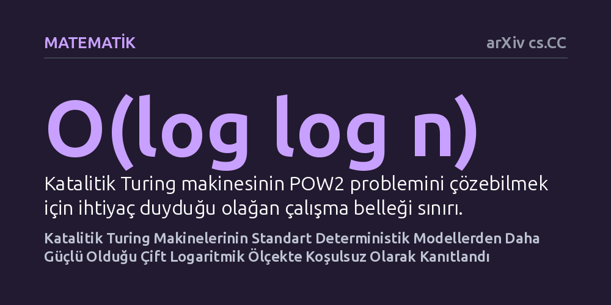

MATEMATIK · arXiv cs.CC · 2026-10-15
Araştırmacı, hesaplama sonunda içeriği temizlenip eski haline döndürülen katalitik belleğin deterministik hesaplama gücünü artırıp artıramayacağını inceledi. Çift logaritmik ölçekte katalitik Turing makinelerinin standart deterministik makinelerden daha fazla dili çözebildiği ilk kez koşulsuz olarak kanıtlandı.
Dolu bir yardımcı belleği silmeden ödünç alıp geri yükleme yönteminin, bilgisayarların problem çözme kapasitesini hiçbir varsayıma ihtiyaç duymaksızın somut biçimde artırdığını gösteriyor.

Bilgisayar biliminde bellek, çözülebilecek problemlerin sınırını belirleyen en temel kaynaklardan biridir. Geleneksel hesaplama modellerinde bir algoritmanın ihtiyaç duyduğu hafıza alanı sıfırlanmış boş bellek hücrelerinden oluşur. Ancak son yıllarda kuramsal bilgisayar bilimciler alışılmadık bir sorunun peşine düştü: Eğer elimizde içi zaten rastgele verilerle dolu bir ek bellek alanı varsa ve tek şartımız işlem sonunda bu alanı aldığımız gibi teslim etmekse, bu 'kirli' belleği kullanarak daha önce çözemediğimiz problemleri çözebilir miyiz?
Kimyadaki katalizörlerin tepkimeye girip harcanmadan süreci hızlandırmasına benzetilen bu modele 'katalitik hesaplama' adı veriliyor. Daha önceki kuramsal çalışmalarda, katalitik logaritmik bellek kullanan makinelerin standart deterministik modellere kıyasla en azından deterministik olmayan makineler kadar güçlü olabileceği gösterilmişti. Ancak katalitik belleğin standart bellek kısıtlarına kıyasla kesin ve koşulsuz bir güç üstünlüğü sağlayıp sağlamadığı kuramsal bilgisayar biliminde henüz tam olarak yanıtlanamamış büyük bir açık problemdi.
Bu çalışma fiziksel bir laboratuvar deneyi, veri analizi veya bilgisayar simülasyonu içermemektedir. Araştırmacı, kuramsal bilgisayar biliminin temel yöntemi olan biçimsel matematiksel ispat tekniğini kullanmıştır. Hesaplama süreçleri, modern bilgisayarların atası kabul edilen soyut Turing makineleri düzeyinde ele alınmış; bellek sınıfları arasındaki ayrımı test etmek için özel bir karar problemi seçilmiştir.
İspatın temel aracı olarak 'POW2' adı verilen tekil bir biçimsel dil kullanılmıştır. Bu dilde amaç, yalnızca '1' sembollerinden oluşan dizilerde sembol sayısının ikinin bir tam sayı kuvveti olup olmadığını belirlemektir. Araştırmacı, bu dili çözmek için gereken bellek miktarını standart deterministik modeller ile katalitik modeller arasında matematiksel olarak kıyaslamış ve aralarındaki kesin kapasite farkını ortaya koymuştur.
Çalışmanın sunduğu temel bulgu, çift logaritmik bellek ölçeğinde katalitik Turing makinelerinin standart deterministik makinelerden kanıtlanabilir biçimde daha fazla dili çözebildiğidir. Araştırmacı, POW2 problemini çözmek için yalnızca O(log log n) bitlik olağan çalışma belleği ve O(log n) bitlik katalitik bellek kullanan özel bir katalitik Turing makinesi inşa etmeyi başarmıştır. Bu makine, yardımcı belleği işlem sırasında yoğun biçimde kullanmasına rağmen hesaplama bittiğinde belleği başlangıçtaki durumuna eksiksiz geri döndürmektedir.
Buna karşılık, aynı POW2 dilini katalitik destek almadan standart deterministik bir Turing makinesiyle çözmek istendiğinde, makinenin en az Ω(log n) büyüklüğünde belleğe gereksinim duyduğu bilinmektedir. Dolayısıyla, son derece kısıtlı olan O(log log n) çalışma belleğine sahip standart bir makine bu problemi kesinlikle çözemezken, katalitik destekli versiyonu problemi başarıyla çözebilmektedir. Bu sonuç, karmaşıklık sınıfları arasında hiçbir ek varsayıma dayanmayan ilk koşulsuz ayrımı oluşturmaktadır.
Bu bulgu, kuramsal bilgisayar biliminde belleğin doğasına bakış açımızı derinleştirmektedir. İçi dolu ve silinmemesi gereken bir hafıza bloğunun varlığı bile, standart makinelerin kesin olarak tıkandığı O(log log n) gibi son derece dar bir alanda bilgisayara ek bir hesaplama gücü kazandırabilmektedir. Gerektiğinde eski haline getirmek kaydıyla belleği ödünç almak, hafıza kullanımında tamamen yeni bir serbestlik derecesi yaratmaktadır.
Bununla birlikte, elde edilen sonucun kapsamı henüz çift logaritmik ölçekle sınırlıdır. Bilgisayar bilimcilerin asıl nihai hedefi olan standart logaritmik bellek ile katalitik logaritmik bellek arasındaki genel koşulsuz ayrım sorusu henüz çözülmüş değildir. Bu çalışma, söz konusu büyük ayrımın daha küçük ve sıkı bir ölçekte kesin olarak gerçekleştiğini göstererek gelecekteki araştırmalara önemli bir basamak ve matematiksel yol haritası sunmaktadır.